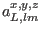
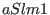
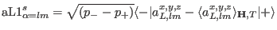

Next: External module function ro_calc Up: Module Functions for Observables Previous: External module function orbmomdensity_coeff Contents Index
In order to visualize orbital moment density fluctuations the external single ion module has to provide the transition matrix elements of the spindensity coefficient operator  by a vector , which is given by: .
The format to be used is:
extern "C" int dspindensity_ceoff1(int & tn,double & T,Vector & Hxc,Vector & Hext,double * g_J,Vector & MODPAR, char ** sipffilename,ComplexVector & aLlm1,int & xyz,float & maxE, ComplexMatrix & est)The meaning of the symbols follows exactly that of function dm1 and therefore not explained here.